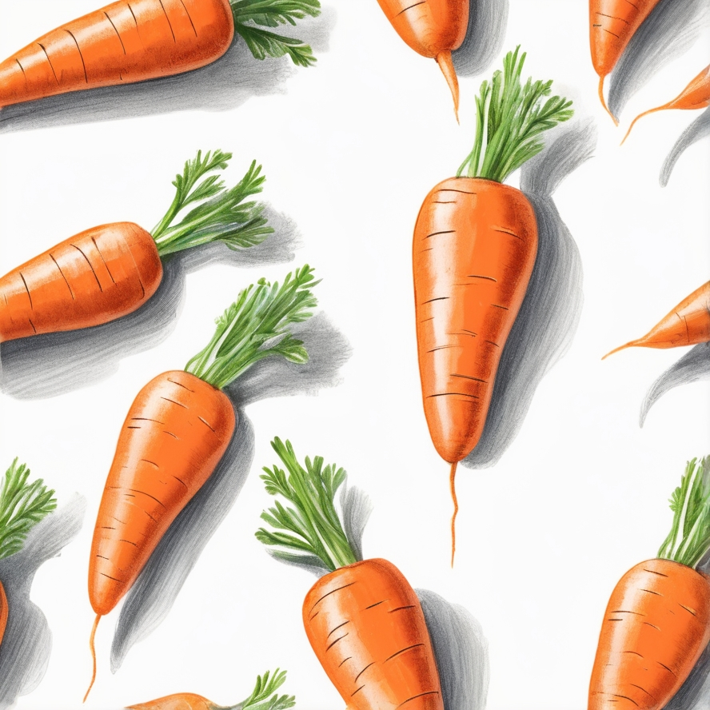

Полезные качества морковки
Морковка – это один из самых полезных овощей в мире. Она богата каротином, который в организме преобразуется в витамин А. Этот витамин не только улучшает зрение, но и поддерживает здоровье кожи, укрепляет иммунную систему и помогает предотвратить болезни сердца.
История моркови уходит корнями в древние времена. Первоначально этот овощ выращивали в Афганистане, и он был фиолетового или жёлтого цвета. Оранжевая морковка, как мы её знаем, появилась в 17 веке в Нидерландах, когда селекционеры создали новый сорт в честь Оранской династии.
Кроме каротина, морковь содержит множество других витаминов и минералов, включая витамины группы В, витамин С и калий. Морковь также богата антиоксидантами, которые помогают бороться с воспалениями в организме и снижают риск развития рака.
- Морковка укрепляет иммунитет
- Морковка полезна для зрения
- Богата витаминами А, В, С и К
| Овощ | Витамин А (мг) | Витамин С (мг) |
|---|---|---|
| Морковка | 835 | 5.9 |
| Томат | 102 | 13.7 |
| Огурец | 0 | 2.8 |
